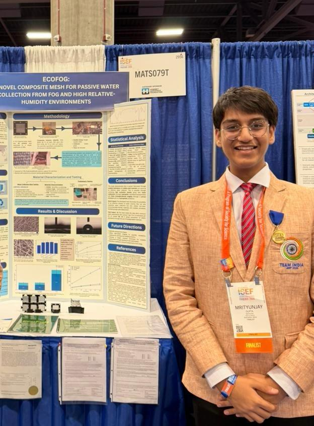
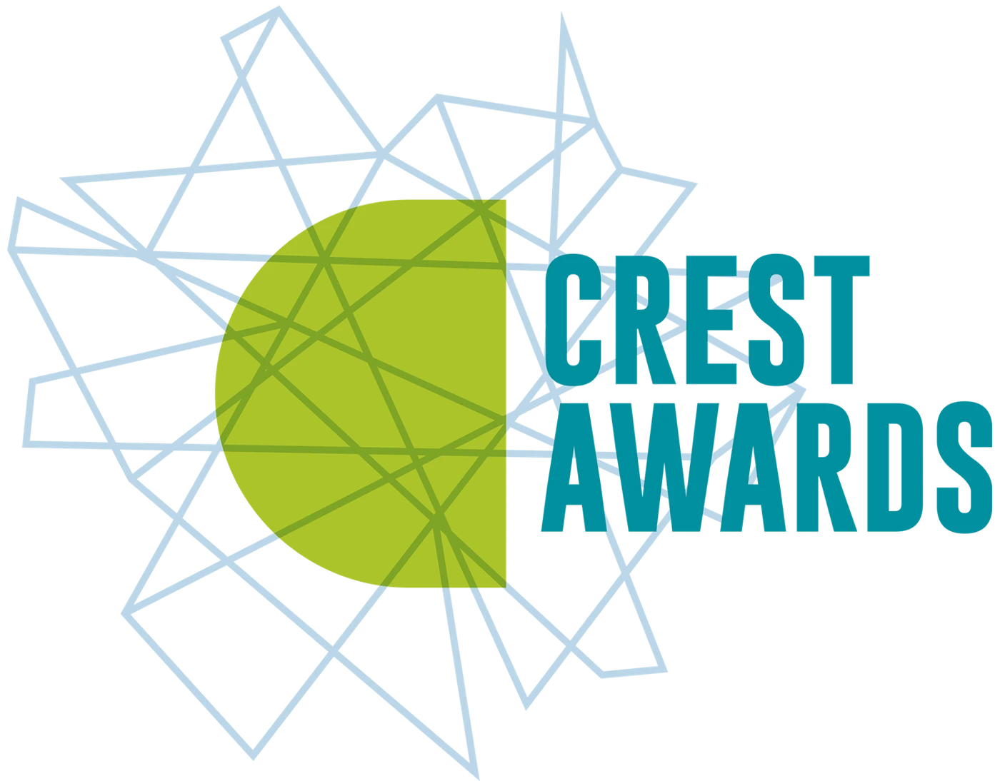
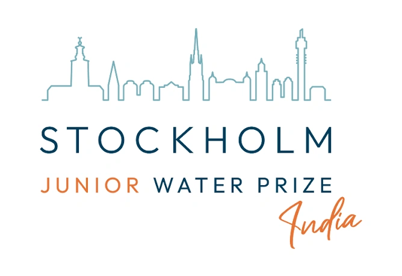
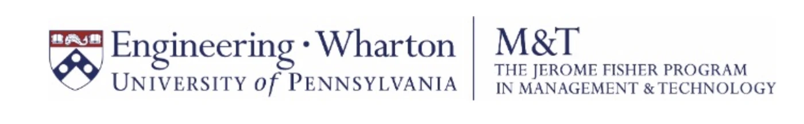

JAIPUR, INDIA
Hi, I’m Mrityunjay.
I’m a high school senior at Jayshree Periwal International School, Jaipur. Through AI, engineering, and applied research, I aim to make advanced, reliable technology more accessible and affordable for underserved communities. My work spans ambulance-routing software, clinical screening models, and the mathematics of physical systems.
More about me ↗

Honours & recognition

Gold Award Emerging Innovator · Top 100 Global HonoreeConrad Innovator · 2025–26
Emerging Innovator · Top 100 Global HonoreeConrad Innovator · 2025–26 Top 100 · 35,000+ entries
Top 100 · 35,000+ entries $10,000 Award · Innovation
$10,000 Award · Innovation Third Grand Award
Third Grand Award Asia Finalist · Mathematics & Physics
Asia Finalist · Mathematics & Physics 2026 recipient
2026 recipient Top 30 globally
Top 30 globally Top in the World · IGCSE Mathematics
Top in the World · IGCSE Mathematics Asia Runner-Up · EcoFog
Asia Runner-Up · EcoFog
National Water Champion Award Gold Medal · EcoFogBest in Country · 2024University of RochesterStudent of the Year
Gold Medal · EcoFogBest in Country · 2024University of RochesterStudent of the Year
Admitted to M&TSIYouth Parliamentarian · 2026 Visionaries Empowering India’s Next Decade
Visionaries Empowering India’s Next Decade Media coverage
Media coverageHere’s an ambulance-routing and signal-priority system I developed (AmbuGo)
Project detailsI evaluate the ambulance’s route together with the signal requests that change traffic along it. The controller uses queue estimates, legal phase constraints, and observed progress to select and adjust priority.
The research tests that control policy through matched mesoscopic and SUMO experiments. A separate Punjab field programme expanded from a 31-intersection pilot to 121 intersections.
Here’s a 3D hand-movement model I developed for robot learning (Human Archive)
Internship detailsI developed representations of human manipulation and worked on alignment and quality checks for multimodal demonstrations. The video pairs an observed task with its 3D hand-movement representation.
At Human Archive, I also managed 12 manufacturing partnerships and onboarded more than 100 workers for data collection. The resulting data products were supplied to six AI laboratories.
Check out my projects and research.
See the letters I received from HRH Prince William, The Prince of Wales, and Prince Harry, Duke of Sussex, upon receiving The Diana Award, and my award certificate.